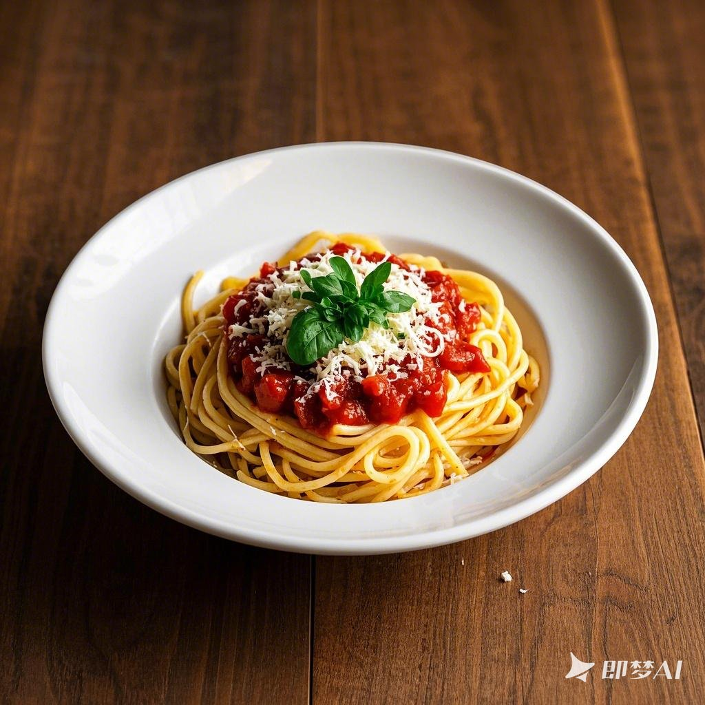

美食介绍
探索世界各地的美味佳肴，感受不同文化的饮食魅力。
北京烤鸭
北京烤鸭是中国最著名的菜肴之一，以其酥脆的外皮和鲜嫩的肉质闻名于世。烤鸭的制作过程需要精湛的技艺，从挑选鸭子到最后的烤制，每一步都极为讲究。传统的吃法是将烤鸭皮和肉卷在薄饼里，配以葱丝、黄瓜条和甜面酱，口感丰富，层次分明。

寿司
寿司是日本料理中最具代表性的美食之一。它由醋饭搭配生鱼片、海鲜或其他配料制成。寿司的魅力在于新鲜的食材和精致的制作工艺。从选料到摆盘，每一个环节都体现了日本料理的精湛技艺。品尝寿司时，可以感受到食材的新鲜度和口感的细腻，是一种独特的美食体验。

意大利面
意大利面是世界上最受欢迎的主食之一。它有多种形状和口味，可以搭配各种酱料。经典的意大利面包括博洛尼亚肉酱面、carbonara培根奶油面和简单的蒜香橄榄油面。意大利面的魅力在于其多样性和灵活性，无论是简单的家常料理还是高级餐厅的精致菜品，都能找到适合的意大利面食谱。